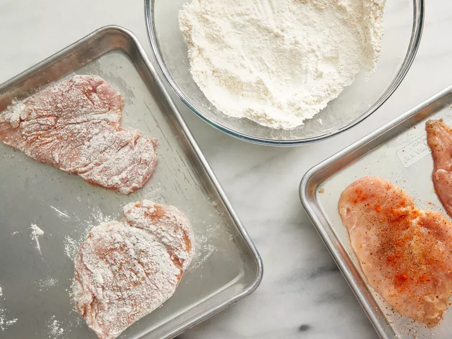
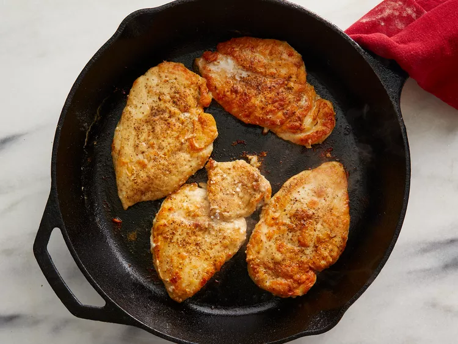
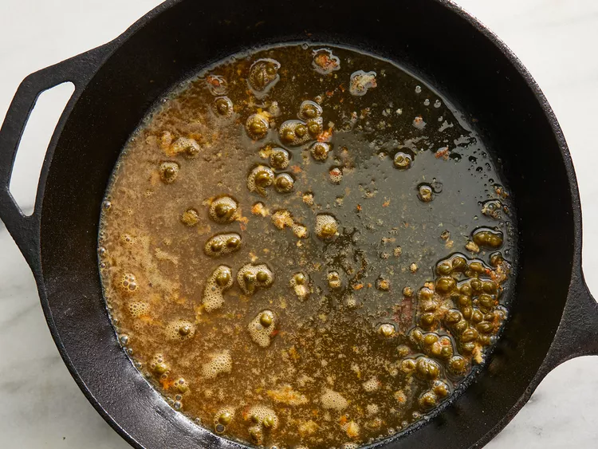
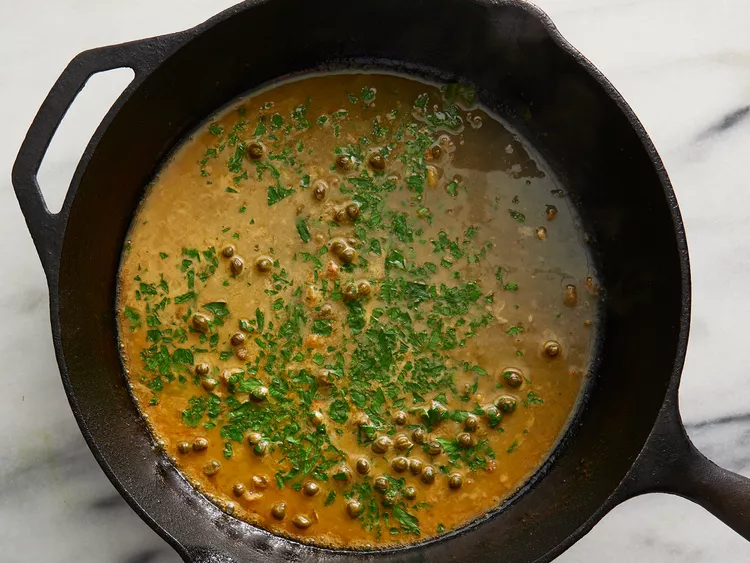

Ингредиенты:
- 4 куриные грудки без кожи и костей
- Кайенский перец по вкусу
- Соль и черный молотый перец по вкусу
- Пшеничная мука для обваливания
- 2 ст. л. оливкового масла
- 1 ст. л. каперсов (слить жидкость)
- 120 мл белого вина
- 60 мл свежего лимонного сока
- 60 мл воды
- 3 ст. л. холодного несоленого масла (нарезать ломтиками по 0,5 см)
- 2 ст. л. свежей итальянской петрушки, рубленой
Приготовление:
-
Шаг 1
Соберите все ингредиенты. Разогрейте духовку до 175 °C.
-
Шаг 2
Посолите, поперчите и приправьте кайенским перцем с обеих сторон. Легко обваляйте в муке, стряхнув излишки.
 -
Шаг 3
Разогрей оливковое масло в сковороде на среднем-сильном огне. Выложи курицу, убавь огонь до среднего и жарь до румяной корочки и полной готовности, примерно по 5 минут с каждой стороны. Переложи на тарелку.
 -
Шаг 4
В той же сковороде обжарь каперсы, слегка раздавливая их, чтобы они выпустили сок, около 30 секунд. Влей белое вино, доведи до кипения и деревянной ложкой соскреби все поджаренные кусочки со дна. Уваривай примерно 2 минуты, пока объем не уменьшится вдвое.
 -
Шаг 5
Добавь лимонный сок, воду и масло. Постоянно помешивай, пока соус не загустеет (примерно 2 минуты). Убавь огонь и вмешай петрушку.
 -
Шаг 6
Верни курицу в сковороду и прогрей в соусе 1–2 минуты. Подавай, поливая сверху соусом.